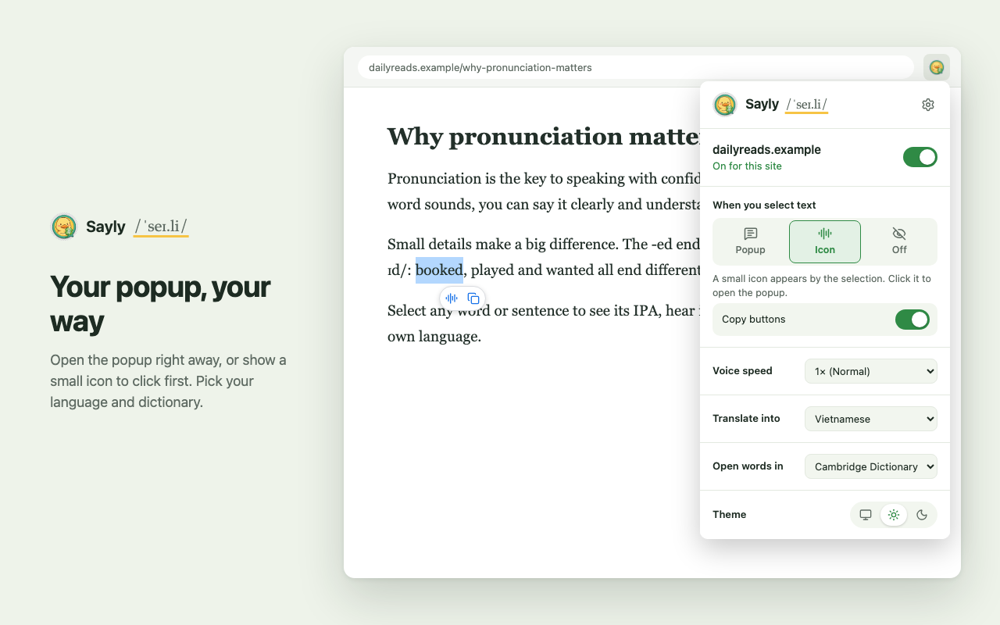
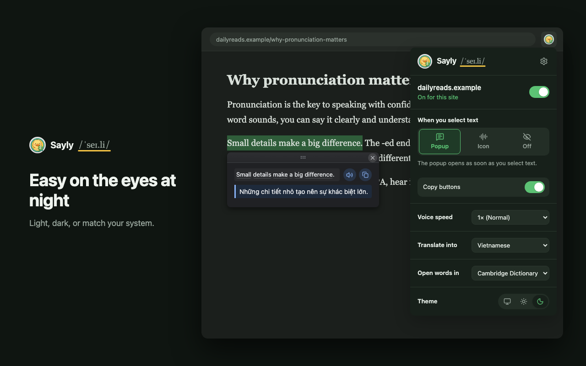

Hear any word, see its IPA
Select English text on any web page. Sayly reads it aloud, shows how every word is pronounced and translates it into your language, right where you're reading.
Free on the Chrome Web Store. Works in Microsoft Edge too.
Words that trip people up
The colonel read the recipe twice before cooking the quiche. Though the weather was rough, he walked through the thorough rain.
Learn the sound while you read
No copying words into a dictionary tab. Sayly works on the page you already have open.
Select
Highlight a word, a sentence or a whole paragraph on any website. The popup opens beside it, or a small icon appears if you prefer.
Listen
Press play to hear the whole selection, at any speed from 0.5× to 1.5×. Press again to stop.
Tap a word
Click any word in the popup to see its IPA, hear just that word, or open it in your dictionary.
Small popup, everything you need
Built for learners who want to hear a word, check its IPA, and get back to reading.
Hear it
Play the whole selection or a single word, from 0.5× to 1.5× speed.
IPA for every word
American English from the built-in CMU Pronouncing Dictionary, about 126,000 words, so most lookups never leave your browser.
Translate
Into 32 languages, Vietnamese by default. Sayly detects the language you selected, and a single word also shows its meanings by part of speech.
Dictionary link
Open any word on Dictionary.com or Cambridge Dictionary for meanings and examples.
Copy in one click
Copy a word with its IPA, or a selection with its translation, straight into your notes.
Your choice of trigger
Open the popup as soon as you select, show a small icon to click first, or turn it off.
Per-site switch
Turn Sayly off on sites where you don't want it, right from the toolbar.
Natural voices
Microsoft's natural voice in Edge, Google's voice elsewhere, or any voice installed on your system.
Light, dark, out of the way
Pick a theme or follow your system. Drag the popup anywhere; press Esc or click outside to close.
Learn English from YouTube
Sayly turns any video with captions into a listening lesson, right inside YouTube's player.
- AaWhole sentences on screenSayly subtitles show complete sentences instead of short caption chunks, keep the last one to three in view, and light up each word as it's spoken.
- Hover a wordThe video pauses and the word's popup opens with its IPA, sound and meaning. Move away and it plays on.
- A DHear it againPress A to replay the sentence you just heard, D to move to the next one, or set them to skip a few seconds instead.
- Settings in the playerA Sayly button next to the gear sets subtitle size, sentences shown and shortcuts, in full screen too.
A closer look



Your reading stays yours
Sayly collects no data and has no analytics. Pronunciation and IPA work locally for words in the built-in dictionary.
- Missing wordsOnly a word the built-in dictionary doesn't know is sent to the Free Dictionary API.
- TranslationSelected text goes to Google Translate, or MyMemory if Google fails. Set translation to Off to stop this.
- Pronunciation audioSpoken text goes to Google's text-to-speech. If that fails, your browser's built-in voice is used.
- YouTube captionsRead from YouTube itself and kept in your browser. A word you hover is looked up like a selection.

Ready to sound it out?
Free and open source. Install it once and every page becomes a pronunciation lesson.